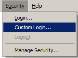
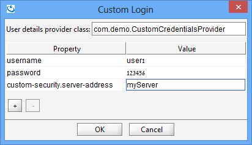

There are three actors in the authentication life cycle:
UserDetails - Encapsulates the information required to authenticate a user, and post authentication – the privileges granted to that user.
CredentialsProvider - A client-side component used to generate a UserDetails instance and send it to the server when needed.
SecurityManager - A server-side component used to authenticate a UserDetails instance which was received from a client.
When a client needs to contact a server for the first time, it uses a CredentialsProvider to create a UserDetails which encapsulates the credentials required for authentication, and send it to the server. The server then uses its SecurityManager to authenticate the UserDetails and to obtain its privileges. The server then generates a unique authentication token which is used to cache the user's credentials and privileges, and return it to the client. From this point whenever the client sends a request to that server it binds the authentication token to the request, so the server doesn't need to re-authenticate it.
The credentials which a client passes to the server for authentication are encapsulated in an interface called UserDetails. UserDetails implementation called User which supports username-password authentication patterns. It is recommended to extend the User class instead of directly implementing the UserDetails interface, and override the super class if needed.
For example, in our demo we only need to add a String payload, hence the following class will suffice:
public class CustomUserDetails extends com.gigaspaces.security.directory.User {
private String customPayload;
public CustomUserDetails(String username, String password, String customPayload) {
super(username, password);
this.customPayload = customPayload;
}
public String getCustomPayload() {
return customPayload;
}
}
User is Serializable, therefore the customPayload field is automatically serialized along with the default credentials.
When a proxy sends a UserDetails instance to the server over the wire, it is implicitly encrypted before serialization and decrypted post de-serialization. This encryption is internal to GigaSpaces and is intended only to secure the transport layer.
In addition, a custom security implementation may choose to encrypt some/all of the data in the UserDetails instance (For example, the default file-based security implementation hashes the user password and encrypts the file contents when persisting data to the disk).
A secured proxy is usually configured with a username-password pair, which are implicitly translated to a default UserDetails implementation as discussed above. When custom credentials are required, the proxy can be configured with a CredentialsProvider implementation, which is used to obtain a UserDetails instance whenever the client connects to a new server.
The custom credentials provider usually stores the required credentials internally and uses them to create a new UserDetails when needed. For example:
public class CustomCredentialsProvider extends CredentialsProvider {
private String username;
private String password;
private String serverAddress;
public CustomCredentialsProvider() {}
public CustomCredentialsProvider(String username, String password, String serverAddress) {
initialize(username, password, serverAddress);
}
@Override
public void initialize(Properties properties) {
super.initialize(properties);
initialize(properties.getProperty(USERNAME_PROPERTY),
properties.getProperty(PASSWORD_PROPERTY),
properties.getProperty("custom-security.server-address"));
}
private void initialize(String username, String password, String serverAddress) {
this.username = username;
this.password = password;
this.serverAddress = serverAddress;
}
@Override
public UserDetails getUserDetails() {
// A real-life implementation would use some external service to generate the custom payload.
// Since this is a demo we mock this by generating the payload locally:
String payload = serverAddress + "#" + username;
return new CustomUserDetails(username, password, payload);
}
}
When using the custom credentials provider from the UI or CLI, it is instantiated via the default constructor and initialized via the initialize(properties) method.
Custom CredentialsProvider can be provided in several ways, as follows:
<!-- Creating the custom credentials provider -->
<bean id="myCredentialsProvider" class="com.demo.CustomCredentialsProvider">
<constructor-arg><value>user1</value></constructor-arg>
<constructor-arg><value>123456</value></constructor-arg>
<constructor-arg><value>myServer</value></constructor-arg>
</bean>
<!-- Creating an embedded secured Space -->
<os-core:embedded-space id="embeddedSpace" space-name="mySpace">
<os-core:security credentials-provider="myCredentialsProvider" />
</os-core:embedded-space>
<!-- Looking up a secured Space -->
<os-core:space-proxy id="space" space-name="mySpace">
<os-core:security credentials-provider="myCredentialsProvider" />
</os-core:space-proxy>
<!-- Creating the custom credentials provider -->
<bean id="myCredentialsProvider" class="com.demo.CustomCredentialsProvider">
<constructor-arg><value>user1</value></constructor-arg>
<constructor-arg><value>123456</value></constructor-arg>
<constructor-arg><value>myServer</value></constructor-arg>
</bean>
<!-- Creating an embedded secured Space -->
<bean id="space" class="org.openspaces.core.space.EmbeddedSpaceFactoryBean">
<property name="name"><value>"mySpace"</value></property>
<property name="credentialsProvider"><ref local="myCredentialsProvider"/></property>
</bean>
<!-- Looking up a secured Space -->
<bean id="space" class="org.openspaces.core.space.SpaceProxyFactoryBean">
<property name="name"><value>"mySpace"</value></property>
<property name="credentialsProvider"><ref local="myCredentialsProvider"/></property>
</bean>
CredentialsProvider myCredentialsProvider = new CustomCredentialsProvider("user1", "123456", "myServer");
// Looking up a remote space
SpaceProxyConfigurer urlSpaceConfigurer = new SpaceProxyConfigurer("mySpace").credentialsProvider(myCredentialsProvider);
GigaSpace gigaSpace = new GigaSpaceConfigurer(urlSpaceConfigurer).gigaSpace();
// Constructing an Admin instance
Admin admin = new AdminFactory().credentialsProvider(myCredentialsProvider).createAdmin();
// Space Deployment
admin.getGridServiceManagers().deploy(new SpaceDeployment("mySpace").userDetails(myCredentialsProvider.getUserDetails()));
// Processing Unit Deployment
admin.getGridServiceManagers().deploy(new ProcessingUnitDeployment("myPu").userDetails(myCredentialsProvider.getUserDetails()));
When a secured server receives a request from the client for the first time, it needs to authenticate the UserDetails instance bundled with the request. This is done by invoking the authenticate(UserDetails) method of the SecurityManager component in the server, which is in charge of both authenticating the user and obtaining its privileges set. The default SecurityManager provided in FileSecurityManager, which (as its name implies) authenticates the UserDetails against a file which stores all the users credentials and privileges.
Implementing a custom authentication obviously requires replacing this security manager with a custom implementation. In our example:
public class CustomSecurityManager implements com.gigaspaces.security.SecurityManager {
private String serverAddress;
public CustomSecurityManager() {}
public CustomSecurityManager(String serverAddress) {
initialize(serverAddress);
}
@Override
public void init(Properties properties) throws com.gigaspaces.security.SecurityException {
initialize(properties.getProperty("custom-security.server-address"));
}
private void initialize(String serverAddress) {
this.serverAddress = serverAddress;
}
@Override
public void close() {
}
@Override
public Authentication authenticate(UserDetails userDetails) throws AuthenticationException {
if (!(userDetails instanceof CustomUserDetails))
throw new AuthenticationException("Invalid credentials class: " + userDetails.getClass());
if (!isValid((CustomUserDetails) userDetails))
throw new AuthenticationException("Invalid credentials for user '" + userDetails.getUsername() + "'");
Authority[] authorities = getUserAuthorities(userDetails.getUsername());
return new Authentication(new User(userDetails.getUsername(), userDetails.getPassword(), authorities));
}
private boolean isValid(CustomUserDetails credentials) {
// A real-life implementation would use some external service to authenticate the credentials.
// Since this is a demo we mock it by generating the payload locally and comparing it to the client's payload:
String expectedPayload = serverAddress + "#" + credentials.getUsername();
return expectedPayload.equals(credentials.getCustomPayload());
}
private Authority[] getUserAuthorities(String username) {
// A real implementation would receive the client's privileges from a security repository.
// Since this is a demo we mock it by returning a fixed set of privileges:
return new Authority[] {
new GridAuthority(GridAuthority.GridPrivilege.MANAGE_GRID),
new GridAuthority(GridAuthority.GridPrivilege.MANAGE_PU),
new GridAuthority(GridAuthority.GridPrivilege.PROVISION_PU),
new MonitorAuthority(MonitorAuthority.MonitorPrivilege.MONITOR_JVM),
new MonitorAuthority(MonitorAuthority.MonitorPrivilege.MONITOR_PU),
new SystemAuthority(SystemPrivilege.MANAGE_ROLES),
new SystemAuthority(SystemPrivilege.MANAGE_USERS),
new SpaceAuthority(SpaceAuthority.SpacePrivilege.WRITE),
new SpaceAuthority(SpaceAuthority.SpacePrivilege.READ),
new SpaceAuthority(SpaceAuthority.SpacePrivilege.TAKE)};
}
@Override
public DirectoryManager createDirectoryManager(UserDetails userDetails)
throws AuthenticationException, AccessDeniedException {
throw new DirectoryAccessDeniedException("Creating a directory manager is not supported in this example.");
}
}
The authenticate method not only validates the credentials are authentic - it also returns the Authority (authenticate method returns an Authentication instance, which is created using a UserDetails instance which stores the user's authorities. You can choose between using the built-in User class to encapsulate the original credentials with the granted authorities (as shown in the demo implementation), or adjusting your custom user details implementation to store the authorities.
Third-party security repositories usually store privileges as strings,so you may find it convenient to use the AuthorityFactory.create(String) method to load the authorities (if it's being stored in its formal string representation).
Security repositories and administrators often prefer not to map users directly to privileges, but rather to create roles (e.g. Admins, Managers, Employees), map a role to a set of privileges (e.g. Write, Read) and then map users to roles (this simplifies management of large sets of users). However, Authority. To bridge this gap you can either traverse the roles hierarchy and flatten it, or use the PopulatedRoleAuthority class, which implicitly flattens the hierarchy for authorization but maintains it for administration.
The createDirectoryManager method can be used to implement a custom users-roles directory management component. However, this is not part of the authentication process, but rather an administrative task, hence our demo throws an exception. If you want to learn more, see Custom User-Role Management.
Custom SecurityManager can be provided in several ways, as follows:
<!-- Configuring a secured space using custom properties -->
<os-core:embedded-space id="space" space-name="space">
<os-core:security secured="true"/>
<os-core:properties>
<props>
<prop key="com.gs.security.security-manager.class">com.demo.CustomSecurityManager</prop>
<prop key="custom-security.server-address">myServer</prop>
</props>
</os-core:properties>
</os-core:embedded-space>
// Creating a secured space using custom properties:
EmbeddedSpaceConfigurer urlSpaceConfigurer = new EmbeddedSpaceConfigurer("mySpace")
.secured(true)
.addProperty("com.gs.security.security-manager.class", CustomSecurityManager.class.getName())
.addProperty("custom-security.server-address", "myServer");
GigaSpace gigaSpace = new GigaSpaceConfigurer(urlSpaceConfigurer).create();
// Creating a secured space using an injected security manager instance:
CustomSecurityManager securityManager = new CustomSecurityManager();
Properties securityProperties = new Properties();
securityProperties.put(CustomSecurityManager.SECURITY_MANAGER_CLASS_PROPERTY_KEY, securityManager);
EmbeddedSpaceConfigurer urlSpaceConfigurer = new EmbeddedSpaceConfigurer("mySpace")
.secured(true)
.addProperties(securityProperties);
GigaSpace gigaSpace = new GigaSpaceConfigurer(urlSpaceConfigurer).create();
The SecurityManager can be configured using custom properties supplied as part of the security properties file (see Security Configurations for information about configuring security properties).
The property com.gs.security.security-manager.class defines the SecurityManager class to instantiate (requires a default constructor).
Additional custom properties can be added to facilitate custom configuration for the security manager.
For example:
com.gs.security.security-manager.class = com.demo.CustomSecurityManager
custom-security.server-address = myServer
Use the -user-details-provider and -user-details-properties arguments to use a custom credentials provider with the CLI.
For a full list of command usage, refer to Using the CLI in a Secured Environment.
Run the gs script, and then use the login command:
gs(.sh/bat)
gs> login -user-details-provider com.demo.CustomCredentialsProvider -user-details-properties username=user1;password=123456;custom-security.server-address=myServer
gs> ...
Use the -user-details-provider and -user-details-properties arguments to use a custom credentials provider with the Web Management Console. -user-details-properties parameter is optional.
Run the gs-webui script with these parameters:
gs-webui(.sh/bat) -user-details-provider com.demo.CustomCredentialsProvider -user-details-properties custom-security.server-address=myServer
The "Custom Login" option can be accessed using the drop-down menu of the "Security" menu.

The "Custom Login" dialog allows to input the class name of the CredentialsProvider implementation and the required properties.
The implementation class can be placed in a JAR under Gigaspaces\lib\platform\ext or anywhere in the classpath of the UI.

If you only have one provider, it might be convenient to set it prior to launching the UI. This will automatically set it as the "user details provider class".
gs-ui(.sh/.bat) -user-details-provider com.demo.CustomCredentialsProvider